Le proprietà del triangolo isoscele
Teorema. Se un triangolo è isoscele, allora ha due angoli congruenti.
Proof. Tracciamo la bisettrice CD dell'angolo AĈB. I triangoli ACD e BCD hanno:
AC ≌ BC per ipotesi;
CD in comune;
AĈD ≌ BĈD perché CD è bisettrice di AĈB.
sono dunque congruenti per il primo criterio di congruenza. In particolare CÂD ≌ CB̂D. □